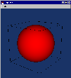
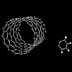
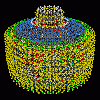
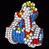

VTK Info
I've been using the Visualization Toolkit (VTK) since it first came out
in the 1990s. It's an amazing library for doing vis and it's open source!
WARNING: while VTK is still very much an active project, this page reflects past work and is out of date
with the current API.
Looking into VTK 4.0...
Linux
Here are the basic steps I took to get VTK built on Linux (WARNING: archived page).
Java
Here's a simple Java program to display a sphere (based on Paul Hsieh's example
sent to the VTK mail list).
sphere.java
Compile:
% javac sphere.java
Run:
% java sphere

Here are a couple of files that provide a Swing/VTK framework for GUI/rendering:
Viewer.java
VTKPanel.java
Files from a Nov. '01 dist of VTK/Wrapping/Java:
vtkPanel.java
SimpleVTK.java
VText.java
Related links:
Linux Threads FAQ
PThread mutex
Python
I contributed the tcl2py.py Python script which in turn helped translate
several of the Tcl scripts to Python that are now available in the VTK
package (e.g., graphics/examplesPython).
Linux/Python
A table of toroidal knots.
(you'll want colors.py too)
Scattered data
Here are some experiments showing results of:
Jython
Go here.
GUIs
It's just a matter of time before some snazzy GUIs will be
(hopefully) contributed by the large VTK user community.
Here are some related links:
vtkPipeline.tcl
Principia Mathematica (Windows-based)
vtkEditor
Sample code:
Here's a hack to display PDB files: pdb_v4.cxx.
(Thanks to Jean Favre for
updating my VTK3.x version to VTK4.x).
It only handles the 'ATOM' (or 'HETATM')
and 'CONECT' keywords, doesn't *generate* bonds (but displays specified bonds),
doesn't scale atoms, etc.
For more on Chemistry-related s/w, check out the
RasMol & Chime
homepage.
wheel.pdb
nanotube.pdb

caffeine.pdb
diffGear.pdb.gz

fineMotion.pdb.gz

Go here for more nano-machines.
Polyhedra
dodec.py
 dodecFoldup.py
dodecFoldup.py

Other stuff
torus.py

vtkOffScreen
For those interested in doing offscreen rendering in OpenGL, here's a
snapshot (vtkOffScreen.tar.gz)
of John Shalf's vtkOpenGLOffscreenRenderWindow class, etc..
Here's an additional class I found necessary to do textures:
vtkOpenGLOffscreenTexture.h
vtkOpenGLOffscreenTexture.cxx
Here's a more recent version of vtkOpenGLOffscreenRenderWindow that I
am using with a nightly version of vtk from ~Sept 12, 2000:
vtkOpenGLOffscreenRenderWindow.h
vtkOpenGLOffscreenRenderWindow.cxx
PyRenderWindow_GetPixelData.cxx - an example of manually Python-wrapping the 'GetPixelData' method.
{kind=link}
{kind=link}
{kind=link}
{kind=link}